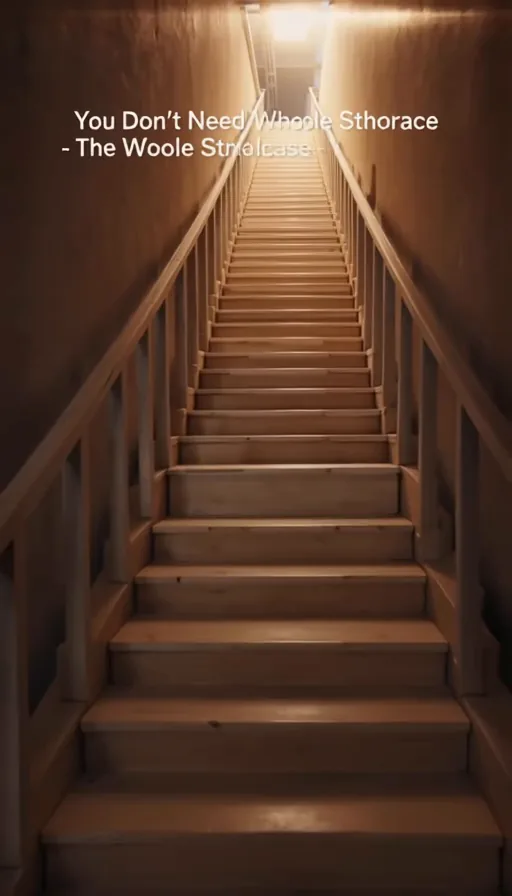
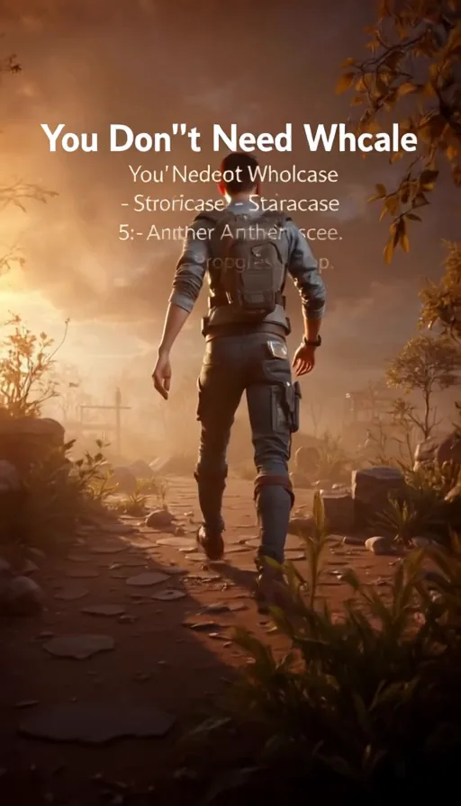

Momentum
Start with something small enough to begin, then let motion create more motion.
ONE SMALL STORY. ONE USEFUL RESET. EVERY DAY.
Original animated stories about momentum, habits, setbacks, rest, confidence, and perspective — designed to leave you with something practical to do.
A USEFUL RESET
Each Daily365 story begins with a concrete situation, choice, setback, or visual metaphor. The ending turns that idea into one specific action you can use in real life.
THE RESET LIBRARY
No recycled quote cards, guilt, fake certainty, or sermon-like narration. Each story is built around a fresh situation and a practical choice.
Start with something small enough to begin, then let motion create more motion.
Read the problem again. A setback can change the route without ending the trip.
Recovery is part of useful effort. Capacity matters more than performing exhaustion.
Make tomorrow’s good choice easier by preparing one small thing today.
Confidence grows from evidence. Give yourself a small action you can actually complete.
Sometimes the useful move is not more force. It is a better angle on the same problem.


STORY FIRST
A tired runner places shoes by the door. A nearly empty robot recharges before returning to one task. A wrong turn becomes a new route instead of proof that the trip is over.
Concrete visual situations are easier to remember than generic speeches, so every episode aims for a miniature story with a visible situation, change, and payoff.
FEATURED STORY
Daily365’s current story turns a familiar problem—waiting until the whole path feels clear—into one practical next step. The site is ready for this featured slot to be populated automatically by the posting pipeline later.
Watch Daily365 on YouTubeA RESET YOU CAN USE ANY DAY
Choose one thing you have been avoiding and reduce it until ten minutes is enough to count. Prepare what you need, start a timer, and give yourself permission to stop when the ten minutes are complete.
The goal is not a perfect day. It is one deliberate beginning.
Find your next reset on YouTubeTHE STANDARD
No fake certainty or “just push harder” messaging.
Every story aims to end with an achievable next action.
No mass-produced quote cards, recycled sayings, or static slideshow templates.